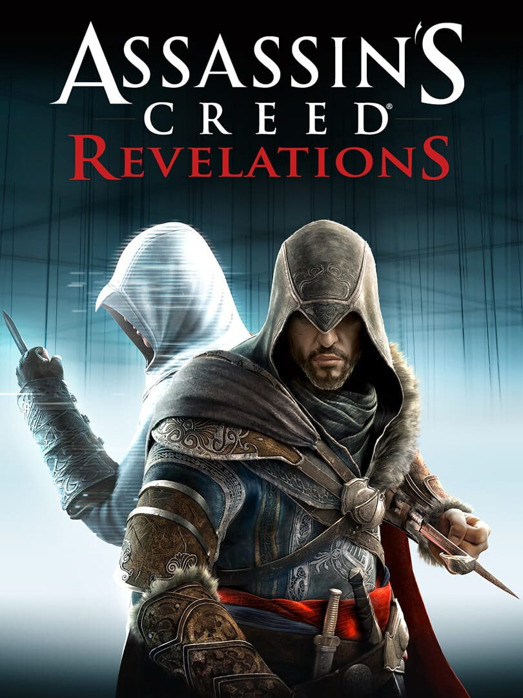

Assassin's Creed Revelations
Assassin's Creed Revelations
Details
|  | |
| Playtime | Not Played |
| Last Activity | Never |
| Added | 25/12/2022 22:09:58 |
| Modified | 17/05/2025 23:45:38 |
| Completion Status | Not Played |
| Library | Steam |
| Source | Steam |
| Platform | PC (Windows) |
| Release Date | 14/11/2011 |
| Community Score | 77 |
| Critic Score | 82 |
| User Score | |
| Genre | Adventure |
| Developer | Ubisoft Montreal |
| Publisher | Ubisoft Entertainment |
| Feature | Multiplayer Single Player |
| Links | Wikia Twitch Youtube Steam Official Website Wikipedia Twitch |
| Tag | Action Action-Adventure Adventure Assassin Atmospheric Conspiracy Controller Great Soundtrack Historical Medieval Multiplayer Open World Parkour RPG Sandbox Sci-fi Singleplayer Stealth Story Rich Third Person |
Description
When a man has won all his battles and defeated his enemies; what is left for him to achieve? Ezio Auditore must leave his life behind in search of answers, In search of the truth.
In Assassin’s Creed® Revelations, master assassin Ezio Auditore walks in the footsteps of the legendary mentor Altair, on a journey of discovery and revelation. It is a perilous path – one that will take Ezio to Constantinople, the heart of the Ottoman Empire, where a growing army of Templars threatens to destabilize the region.
In addition to Ezio’s award-winning story, a refined and expanded online multiplayer experience returns with more modes, more maps and more characters, allowing you to test your assassin skills against others from around the world.
In Assassin’s Creed® Revelations, master assassin Ezio Auditore walks in the footsteps of the legendary mentor Altair, on a journey of discovery and revelation. It is a perilous path – one that will take Ezio to Constantinople, the heart of the Ottoman Empire, where a growing army of Templars threatens to destabilize the region.
In addition to Ezio’s award-winning story, a refined and expanded online multiplayer experience returns with more modes, more maps and more characters, allowing you to test your assassin skills against others from around the world.
Key Features:
- BECOME DEADLIER THAN EVER
Wield the lethal skills of a wiser, more efficient and deadlier Ezio. Swiftly eliminate your adversaries by deploying a new arsenal of weapons and abilities, such as enhanced free-running and hook blade combat. Experience new levels of gameplay customization with bomb crafting, and use heightened Eagle Vision to overcome your enemies and the environment.
- TEST YOUR SKILLS AGAINST THE BEST
A critically acclaimed multiplayer experience gets even better, with all-new team modes and infinite replay value.
- EXPERIENCE REVOLUTIONARY GAMEPLAY
Explore the farthest reaches of the Animus as you uncover the mysteries of Desmond’s past while gaining insight into what the future might hold.